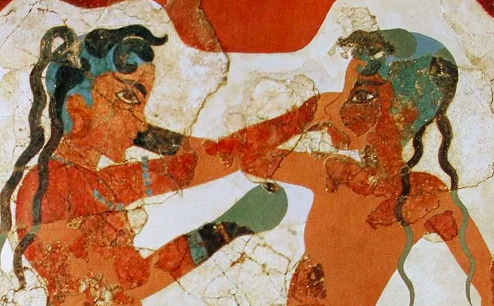

Primeros antecedentes del box
El origen del pugilato se pierde en la noche de los tiempos.
Mucho antes de que se fabricaran armas ofensivas, los hombres tuvieron necesidad de hacer uso del arma más sencilla y natural, de la que se hallaba más a su alcance.
El pugilato de los antiguos, manifestaciones de la fuerza material en lo que de más brutal tiene, no merecería que nos ocupáramos de él, si ciertos atletas no hubieran sabido elevarlo a la categoría de arte. “Crujen las mandíbulas al recibir los golpes”, dice Homero en la descripción del combate entre Euco y Eurialo. Y describe como “el divino” Euco, lanzándose sobre su adversario, le aplica una golpe tan violento, que Euralio cae, sin sentido, vomitando negruzca sangre.
Como la terrible lucha que habían empeñado amenazaba prolongarse hasta muy entrada la noche, convinieron los dos en cierto momento, en no parar los golpes. Mientras el uno castigara, el otro debía permanecer inmóvil.
Ciertos pugilistas comprendían de otro modo los principios de su profesión. No daban grandes golpes, y hasta se abstenían por completo de propinarlos. Obtenían la victoria, no por la fuerza bruta, sino por la resistencia de su cuerpo, y la habilidad para eludir los golpes.
El lastimoso estado en que quedaban los contendores hubiera conmovido a un corazón de roca; pero los poetas, gente que suelen enternecerse fácilmente, no se conmovían, especialmente los poetas satíricos, porque la antología griega hormiguea en epigramas sobre tan fecundo asunto.
“El vencedor de los Juegos Olímpicos que estás viendo en este ese estado, tuvo en otro tiempo nariz, orejas y dientes”.
Boxeo como deporte olímpico moderno
Coficialmente conocidos como los Juegos de la III Olimpiada, se llevaron a cabo como parte de la Feria Universal de San Luis, Estados Unidos. El boxeo se integra por primera vez como deporte olímpico.Los combates se realizaron en el Francis Gymnasium de San Luis del 21 al 24 de septiembre de 1904. En total fueron disputadas en este deporte siete pruebas diferentes, todas en la categoría masculina. En estos Juegos estaba permitido que boxeadores de pesos inferiores compitieran en clases superiores. Todas las medallas en todas sus categorías se las llevó el equipo de Estados Unidos.
Primera incursión en los Panamericanos
El 25 de febrero de 1951 comenzaron los primeros Juegos Panamericanos de la historia. La ceremonía de inauguración fue en la cancha de Racing y la de cierre en la de River. Las categorías disputadas fueron ocho. Todas las medallas de oro fueron para argentinos. Estos fueron los triunfadores: Alberto Barenghi (mosca), Ricardo Gonzalez (gallo), Francisco Nuñez (pluma), Oscar Galardo (liviano), Oscar Pita (medio mediano), Ubaldo Pereyra (mediano), Rinaldo Ansalone (medio pesado) y Jorge Vertone (pesado).
Comienza el boxeo femenino
La competición de peso ligero (mujeres) - 60 Kg de los Juegos Olímpicos de Londres 2012 se llevó a cabo del 5 al 9 de agosto. Fueron 3 eventos de boxeo femenino en peso mosca, ligero y mediano. Se disputaron cuatro asaltos en total, de dos minutos cada uno y un minuto de descanso entre asaltos. Fueron 12 países los que participaron en esta disciplina. Se llevaron las medallas: Katie Taylor de Irlanda con oro, Sofya Ochigava de Rusia con plata, Adriana Araujo de Brasil y Mavzuna Chorieva de Tayikistán con bronce.